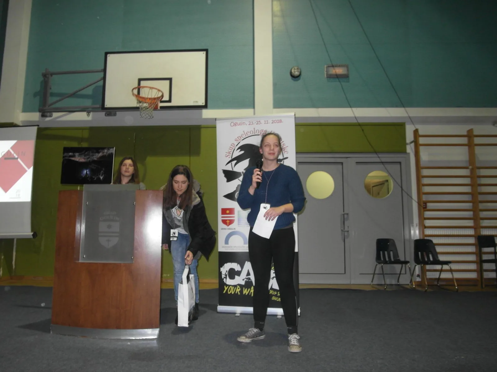

Crtice sa Skupa speleologa Hrvatske
Malo o skupu, u nekoliko rečenica, par sličica i koji filmić. Za one koji su željeli biti tamo, a nisu mogli. Patite, jer bilo je odlično :)

I prođe tako još jedan Skup speleologa. Ali nije baš da bi se sve moglo svesti u tu jednu, jednostavnu rečenicu. Sedam dana speleologije u Ogulinu krenulo je u ponedjeljak otvaranjem dviju izložbi "Vode podzemlja" i "Istraživači hrvatskog podezmlja", tribinama za građane - sa speleološkom tematikom o Đuli Medvedici, radionicama za najmlađe... A radionice su obilježile ovogodišnji skup speleologa. Tako je u petak pod nazivom "Istraživači 21. stoljeća", održano je 16 paralelnih radionica na kojima su djeci, učenicima i nastavnicima demonstrirane metode suvremenog obrazovanja te je pokazano da se u sustavu zaštite prirode, stručnim i znanstvenim ustanovama i strukovnim udrugama nalaze stručnjaci koji imaju već razrađene programe i metode koji su potpuno sukladni najboljem europskom obrazovanju. U izvedbi događanja je sudjelovalo oko 40 stručnjaka iz 22 ustanove ili strukovne udruge, a radionicama je nazočilo preko 1000 djece!
Subota je naravno, tradicionalno pripala samim speleolozima, uz veliki broj prijavljenih predavanja (50) o rezultatima ovogodišnjih istraživanja, ekspedicijama, itd, prikazanim posterima te odabirom filmova ovogodišnjeg Speleo Film festivala. Neizostavan je bio i natječaj za najbolju speleološku fotografiju. Glavni radni dan zaključen je tulumom uz bend i jednim strukovno-sportskim natjecanjem pod nazivom "Duboko grlo" u kojem su dvočlani timovi pokazali vještine vezivanja speleoloških čvorova pod kontroliranim utjecajem maligana. Velebitaški tim "poražen" je u finalu od slovenske ekipe, a prva tri mjesta nagrađena su ogulinskim eko proizvodima - krumpirom, zeljem i medom. Zadnji dan također tradicionalno, rezerviran je za sastanke KS HPS i okrugli stol na temu "Katastar speleoloških objekata RH". Ovogodišnjem skupu nazočilo je gotovo 250 speleologa iz Hrvatske, Slovenije, Bosne i Hercegovine i Srbije.
Ovo je već drugi put u tri godine da se Skup speleologa održava u Ogulinu, a to se ne bi moglo bez velike podrške i gostoprimstva koje smo oba puta i dobili od Grada Ogulina i njegovih institucija i na tome se još jednom najsrdačnije zahvaljujemo.
Uz prigodnu fotogaleriju, pogledajte i kratki filmić kako smo se velebitaški proveli u Ogulinu. (mp) Fotografije: Dalibor Paar [youtube https://www.youtube.com/watch?v=4H76qKzpRHk&w=560&h=315]
[gallery ids="2139,2140,2141,2142,2143,2144,2145,2146" type="rectangular"] Linkovi: Samoborci u Ogulinu demonstrirali metode suvremenog obrazovanja Završeni dani speleologije u Ogulinu Masovno obrazovno događanje za 21. stoljeće u ogulinu SpeleoFilmFestival Ogulin 2018 Croatia Komisija za speleologiju HPS - Skup speleologa Hrvatske Ogulin 2018.